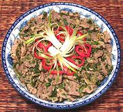

|
Beef & Herb SaladThailand - Neua Nam Tok | ||||
| Serves: Effort: Sched: DoAhead: |
4 salad ** 30 min Yes |
Beef salads like this are very popular here in Southern California. Served just cool, this recipe can be a salad, or a cool summer main dish for two. For a mixed gathering you can make it fairly mild and pass Thai Chili Vinegar Sauce for Thai enthusiasts. | |||
|
1 ------- 1 3-1/2 1/2 1/2 1 3 1/3 1-1/2 1/2 1/4 ------- 1-1/2 |
# ---- sml oz c c T c T t t ---- T |
Beef (1) -- Dressing Lemon Grass (2) Shallot Mint Leaves Cilantro Scallion Fish Sauce Lime Juice Toasted Rice (3) Chili powder (4) Sugar -------- Oil (5) |
Make: - (30 min)
|